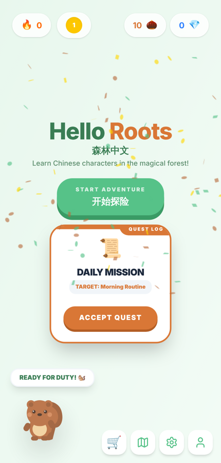
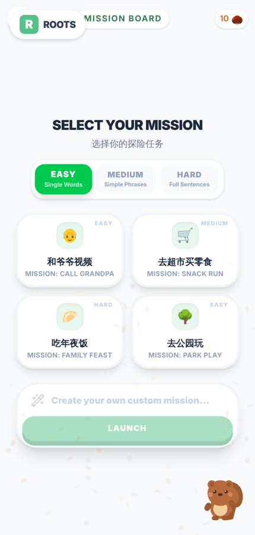

Honours Physics at the University of Waterloo. Everything below is something I made and you can use right now, on this page.
郭子瑞 · Waterloo, Ontario
Try the first oneA Mandarin tone checker that says what to fix, not just how wrong you were. It extracts a learner's pitch, normalises it to their own voice, and scores the contour against the five tones.
Drag across the chart to draw how your pitch moves from the start of the syllable to the end.
Nothing scored yet.
What you are using is ToneViz's pipeline ported to JavaScript for this page: pitch in semitones relative to the speaker's own median, time stretched to 0–100 %, then a mean-centred RMS distance to each tone template; the nearest template is the detected tone. The Python original does the pitch tracking with librosa's probabilistic YIN; here it is an autocorrelation tracker on the microphone, so it is rougher. The feedback rules are the same ones the Python version prints.
Paste in a boring questionnaire; get back a "which type are you?" quiz people actually finish. Every answer maps back to the original item, so the owner still gets their data table, plus flags for respondents who contradicted themselves or rushed.
The quiz, the two axes, the four types and their avatars are the tool's actual output for that survey (translated from Chinese for this page). The scoring you just went through is a line-for-line port of scoring.py, including the contradiction check.
A Mandarin app for kids in heritage-language families. Pick a real situation such as a video call with grandpa, get a short generated lesson, then say it out loud and get pronunciation feedback a nine-year-old can act on.


Express is the only thing that talks to Gemini, so the API key never reaches the browser bundle. The three routes generate the lesson, read it aloud at normal or slowed speed, and score what the learner actually said, 0–5 stars with a tip.
A Chrome extension that closes a messy window safely: it groups the tabs by what you were doing, names each group from your own search terms, and lets you search and restore them later. No account, no network, no AI, just heuristics.
Press "Group and name" to run the grouping.
Grouping stacks four signals: Chrome groups you already made, chains of tabs opened from the same page, loose tabs from one site, and the rest. Naming takes the search query you typed when one exists, otherwise words that repeat across titles, otherwise the site name. The file doing this on the page is unmodified from the extension.